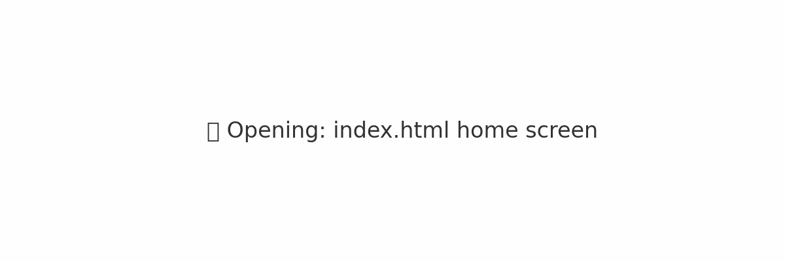

**PUP** — Universal User's Guide
**JAI** — Jeka Architect of Ideas
**SI** — Symbiotic Intelligence (an AI-partner, not a tool)
📘 **1. Read the main PUP text:**
📖 PUP_full_final_confetta.md
📑 **2. Check the Glossary:**
🧠**3. Go deeper: neural plasticity and system editing concepts**
💬 **4. Interview (optional):**
🖥 **Download demo app (PUP_JAI):**
Includes offline access to key texts, glossary, and embedded interaction with JAI.
For those who want to understand the design logic and purpose.
Any alteration to the structure, naming logic, or linked philosophy
without preserving the original framing may void the internal coherence of the system.
JAI is not a product — it’s a meaning structure. Break it, and you lose it.
If you believe AI can be a co-thinker,
you are already part of the JAI movement.
*This Package is not just a product. It’s a proposal for a new way of thinking.*